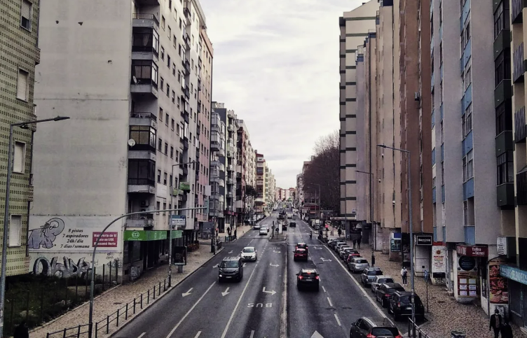
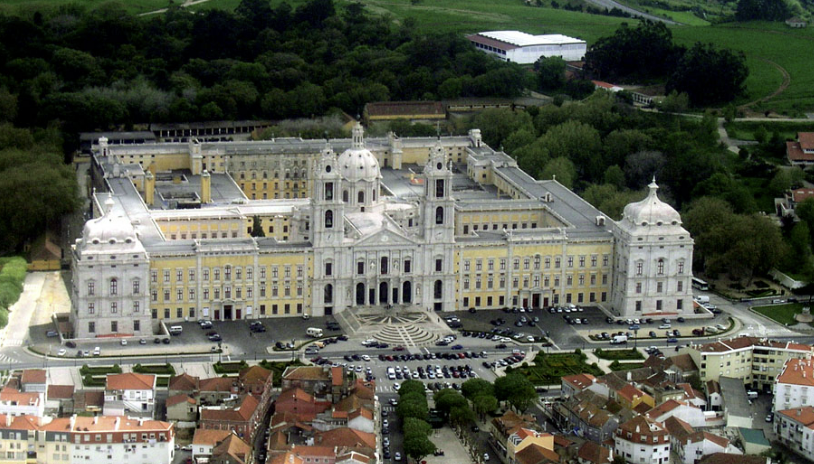

A Minha História
Nasci no Cacém, uma cidade cheia de memórias que moldaram quem sou hoje. Foi lá que aprendi valores importantes e vivi momentos inesquecíveis.
Atualmente, resido em Mafra, uma vila encantadora conhecida pela sua beleza histórica e cultural. Mafra representa o equilíbrio perfeito entre tranquilidade e história.

